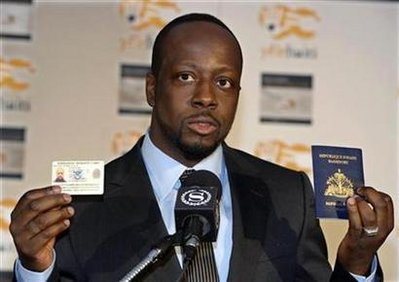
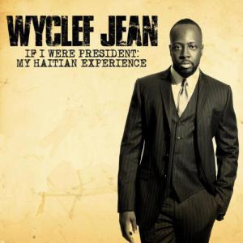

Wyclef Jean est un chanteur, guitariste et producteur né le 17 octobre 1969 à Croix-des-Bouquets en Haïti. Né dans la banlieue proche de Port-au-Prince, il émigre à l'âge de dix ans à New York et s'installe avec ses parents à Brooklyn. Il y rencontre celui qui deviendra son meilleur ami, le chanteur Pras Michel, avec lequel il décide de fonder un groupe. Pras demande un coup de pouce à Ronald Khalis Bell, producteur de Kool and the Gang, et présente sa camarade de classe Lauryn Hill à Wyclef. Lauryn, Wyclef et Pras fondent The Fugees, qui deviendra l'un des groupes les plus populaires des années 90 avec plus de trente millions d'albums vendus, dont plus de six aux Etats-Unis pour The Score, album culte sorti en 1996. Très impliqué dans la vie de son pays de naissance, Wyclef Jean a mis sa popularité au service d'Haïti à plusieurs reprises. Après le tremblement de terre dramatique qui ravagea le pays en 2010, il récolte des fonds pour la reconstruction et crée l'ONG Yéle Haïti. Il a également apporté son soutien politique au candidat à l'élection présidentielle Michel Martelly en 2011, ce qui lui valut une blessure par balle au cours d'une attaque menée par des opposants politiques. Wyclef Jean est marié à la designer Marie Claudinette depuis 1994. Le couple a adopté en 2005 une fille prénommée Angelina Claudinelle Jean.
La star de hip-hop a déposé sa candidature à l'élection présidentielle haïtienne, prévue en novembre. Adulé par la jeunesse de l'île, celui qui se présente comme «l'homme du changement» compte aussi de virulents détracteurs.  En 2010, Wyclef Jean avait déjà tenté sa chance pour la présidence, en réponse notamment au terrible tremblement de terre survenu quelques mois avant, mais avait été débouté car il ne résidait pas à Haïti. Il ressent néanmoins l’impact de ses prises de positions : « Cela a galvanisé la jeunesse à travers le monde car parfois notre rôle n’est pas de réussir mais de permettre à la nouvelle génération de le faire. »